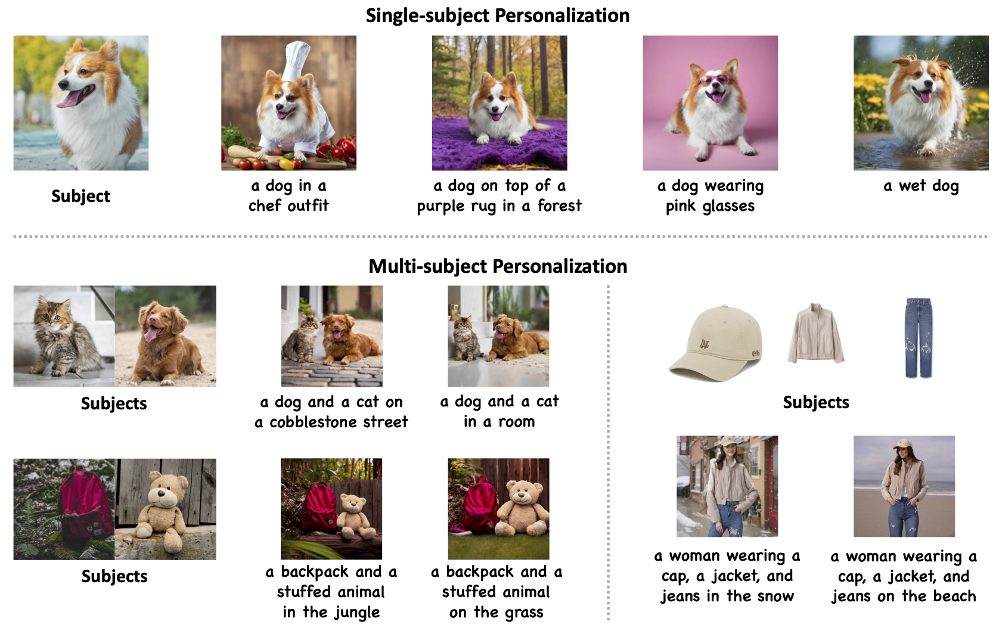
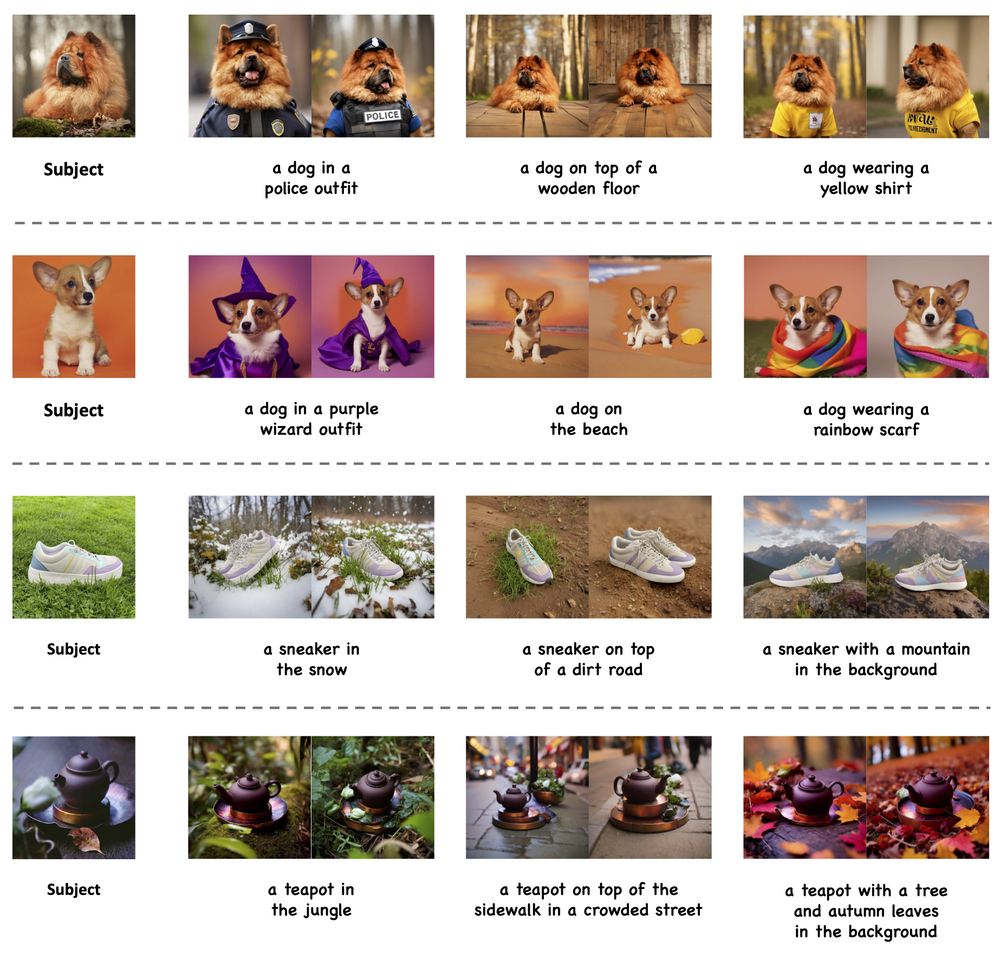

MS-Diffusion: Multi-subject Zero-shot Image Personalization with Layout Guidance
Alibaba Group, Zhejiang University

Recent advancements in text-to-image generation models have dramatically enhanced the generation of photorealistic images from textual prompts, leading to an increased interest in personalized text-to-image applications, particularly in multi-subject scenarios. However, these advances are hindered by two main challenges: firstly, the need to accurately maintain the details of each referenced subject in accordance with the textual descriptions; and secondly, the difficulty in achieving a cohesive representation of multiple subjects in a single image without introducing inconsistencies. To address these concerns, our research introduces the MS-Diffusion framework for layout-guided zero-shot image personalization with multi-subjects. This innovative approach integrates grounding tokens with the feature resampler to maintain detail fidelity among subjects. With the layout guidance, MS-Diffusion further improves the cross-attention to adapt to the multi-subject inputs, ensuring that each subject condition acts on specific areas. The proposed multi-subject cross-attention orchestrates harmonious inter-subject compositions while preserving the control of texts. Comprehensive quantitative and qualitative experiments affirm that this method surpasses existing models in both image and text fidelity, promoting the development of personalized text-to-image generation.
MS-Diffusion introduces two pivotal enhancements to the model: the grounding resampler and multi-subject cross-attention mechanisms. Firstly, the grounding resampler adeptly assimilates visual information, correlating it with specific entities and spatial constraints. Subsequently, a targeted cross-attention mechanism facilitates precise interactions between the image condition and the diffusion latent within the multi-subject attention layers. Throughout the training phase, all components of the pre-existing diffusion model remain frozen.
MS-Diffusion shows excellent text fidelity in all subjects while keeping subject details, especially the living ones (dogs). It can be noticed that some elements in the background (the third line and the fourth line) also occur in the results (the grass and the teapot holder) since the entire images are referenced during the generation. Their scope of action depends on the input bounding box. In practical applications, using masked images as a condition is recommended.
The multi-subject results encompass various combination types, fully demonstrating the generalizability and robustness of MS-Diffusion. When the scene changes freely according to the text, the details of the subject are preserved without being affected. In addition to common parallel combinations, MS-Diffusion also performs well in personalized generation for combinations with certain overlapping areas, such as "living+midwearing" and "object+scene".
Qualitative examples of MS-Diffusion about the layout control ability. Bounding boxes of different colors correspond to subjects with different color borders. It can be demonstrated that MS-Diffusion can generate images that adhere to layout conditions, even in the case of two instances of the same category. However, the generated positions are not entirely accurate, especially in "a cat and a cat on the grass", illustrating that the layout condition is relatively weak compared to text and image prompts in the personalization task.
Generative results when integrating different control conditions. The integrated ControlNets are composed of depth, canny edge, and openpose.
Subjects interpolation in multi-subject generation. We select two dogs and two hats to conduct linear interpolation with the text set to "a dog wearing a hat on the beach".
@misc{wang2024msdiffusion,
title={MS-Diffusion: Multi-subject Zero-shot Image Personalization with Layout Guidance},
author={X. Wang and Siming Fu and Qihan Huang and Wanggui He and Hao Jiang},
year={2024},
eprint={2406.07209},
archivePrefix={arXiv},
primaryClass={cs.CV}
}